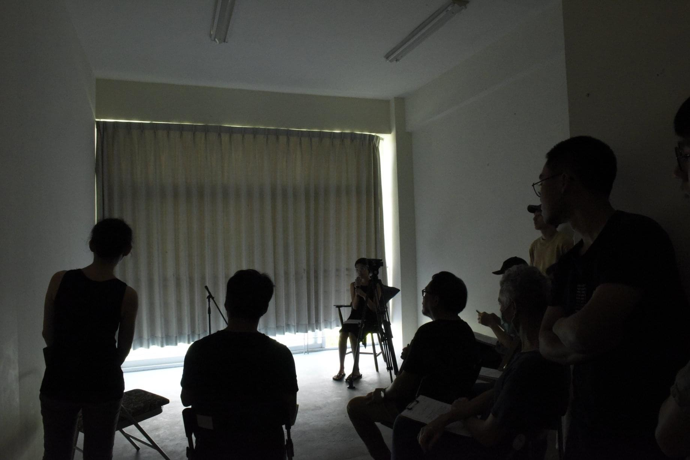
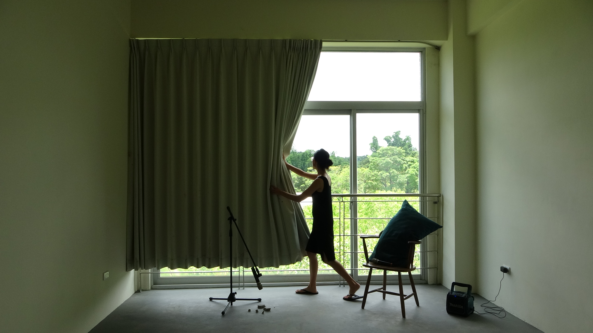
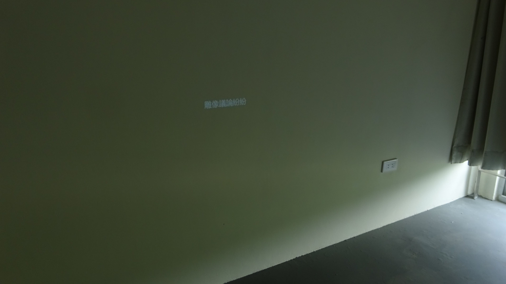
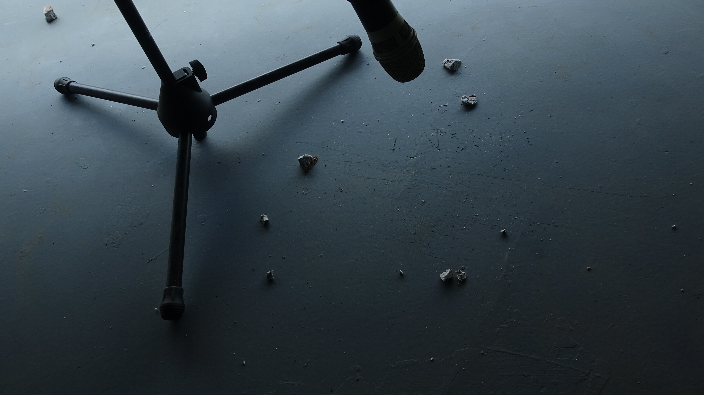

風穿過石頭的裂縫發出聲音
2020
講述表演
當我說「一顆石頭」，便在每個人的腦海裡產生千萬種形狀的可能。然而，沒有一個是不真實的。
講述散步於臺南藝術大學校園、烏山頭水庫與水庫風景區所不期而遇的經歷，穿插沿路收集而來的環境音與風景區阿姨的導覽。這些片段並非依循時間線鋪陳，而是在言說、聲音與記憶之間交錯展開。
演出於猶如半裸露的後台現場形式發表，言談間在流言、閒聊、導覽介紹、日記式口白、擬音等敘事方式之間滑移，串起我們與週遭，隱匿於日常之下的關係，那些聽起來微不足道的細節，連接成事物的種種關聯，去到一個從前可能被遮蔽的世界。


